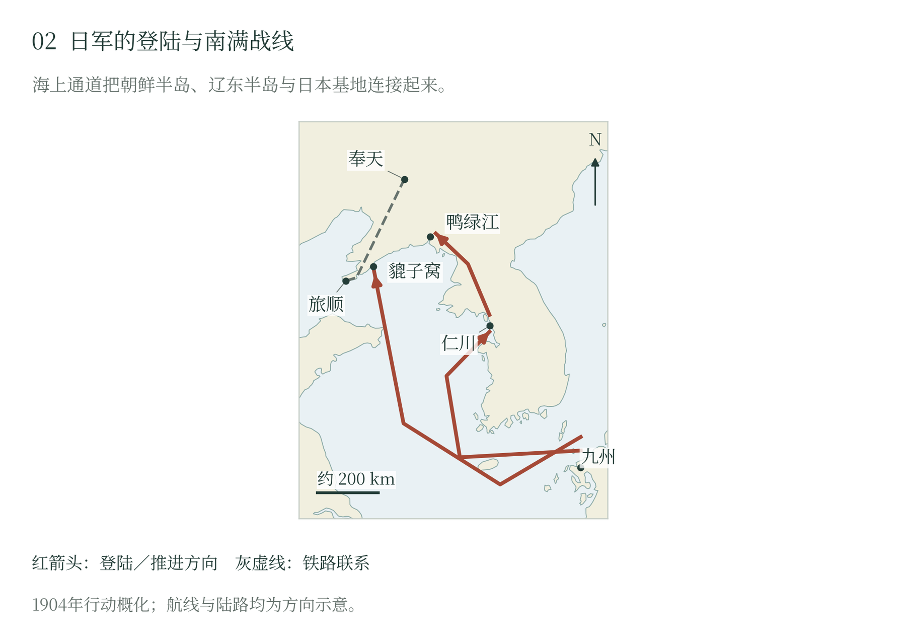

第二章 从战争开局到鸭绿江
海上攻击与朝鲜登陆
1904年2月8日，日本部队在仁川登陆。俄国军舰仍在港内，日军已着手控制通向汉城的入口。翌日，“瓦良格”号与“高丽人”号出港交战，受阻后退回，俄方随后凿沉前者、炸毁后者。旅顺方向的攻击同时展开：8日至9日夜间，日本鱼雷艇袭击外泊地，击伤“列特维赞”“皇太子”和“帕拉达”三舰。夜袭争得了先机，港内尚存的舰艇和岸炮仍在，日本舰队还须继续防备俄舰出动。 〔1〕
军事行动先于日本正式宣战。日本于6日断交，俄国宣战文书的俄历1月27日对应公历2月9日，日本则在10日发表宣战诏书。断交、攻击与宣战的这一先后关系，是战争责任叙述的一部分；双方公开声明各自强调对方的威胁与交涉责任。〔2〕
朝鲜对日本兼有进军通道和政治目标的意义。2月23日，日军已经进入朝鲜后，双方签订议定书：文本保证朝鲜独立与领土完整，同时允许日本采取必要措施并使用战略地点。日本由此获得支撑军事行动的协定形式，朝鲜政府的自主空间则随驻军、交通控制和所谓保护措施收缩。〔3〕
黑木为桢的第一军由近卫、第二和第十二师团组成。各部队分批登陆，三月利用镇南浦等港口展开，再向北推进。步兵的行军要与火炮、粮食、牲畜及电报的接续保持一致；四月下旬集中到鸭绿江附近时，第一军才具备跨河作战所需的部署和储备。这几周将开战时的突然袭击，转化为可以深入大陆的持续行动。〔4〕
在宽正面上寻找渡河点
鸭绿江下游的河道、沙洲与岛屿，把渡河分成若干相连的步骤。俄军扎苏利奇所部在安东、九连城及上游展开，主阵地依托叆河右岸高地，便于观察并炮击渡河部队。防御的困难在于河段宽广：过早集中可能放开别处，分散警戒又会使主渡河点缺乏足够兵力。〔5〕
日军利用岛屿逐步靠近，并以侦察、隐蔽集结和下游示威干扰俄方判断。四月二十八日前后的计划，以第十二师团向上游水口镇方向迂回，第二师团与近卫师团担负主要正面行动。上游部队过河后，可以转向俄军侧后，迫使守军同时注意河岸与退路；正面炮兵和工兵则为主力跨越河道创造条件。〔6〕
二十九日至三十日，第十二师团先行渡河，工兵架桥，部队占领前进位置。日方炮兵逐步投入，三十日的射击压制了部分俄军炮位。岛屿掩护了接近中的部队，桥梁让后续兵力陆续通过，炮火压住守军的干扰。上游日军又逼向侧翼，俄军须兼顾正面和退路。渡河所需的几项准备，至此逐步接在一起。 〔6〕
俄军仍有向受威胁地段增援、保持主要阵地或及早缩短正面的选择。扎苏利奇需要从不完整的侦察中判断日本主攻方向，而日军已经通过分阶段接近改变了渡河条件。到主攻前夕，俄方最初赖以迟滞敌军的河障，正被桥梁和上游迂回逐步削弱。〔7〕
九连城阵地与退路
四月三十日夜至五月一日清晨，日军主力继续跨越鸭绿江。五月一日，第二师团与近卫师团向叆河和俄军正面阵地展开攻击，第十二师团从侧翼施加压力。河流和高地原本提供了防御纵深，随着日军跨过水障并扩大桥头，俄军不同阵地之间的联络和退却路线受到威胁。〔8〕
俄军作出撤退选择后，前沿部队仍须在炮火下离开阵地，后卫负责掩护，部分炮械被遗弃或缴获。守军向凤凰城方向退出，日军取得安东、九连城一带的立足点。战斗使日本掌握了从朝鲜进入南满的陆上入口，也显示出日军将侦察、炮兵、工兵与步兵纳入同一作战计划的能力。 〔7〕
黑木的部队在鸭绿江站稳后，得以从东路接近南满铁路。俄军退向内地，保存下来的兵力还将参加后续作战。日本随即准备在辽东半岛登陆，从另一方向割断旅顺同腹地的联系。东路已经打开，第二条进军线也将上岸。

旅顺方向的海上攻击，与仁川先遣登陆同时展开。后续部队在三月分批进入镇南浦，再沿朝鲜道路北进，到四月下旬在鸭绿江一带形成能够渡河作战的第一军。
随文简图 · 自然地理底图：Natural Earth；历史依据见本章注及大图2逐图来源。大图2（图册第2页）